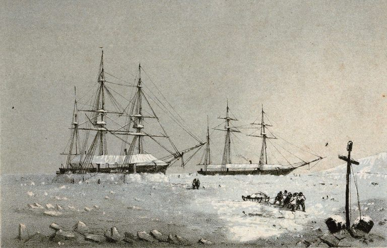
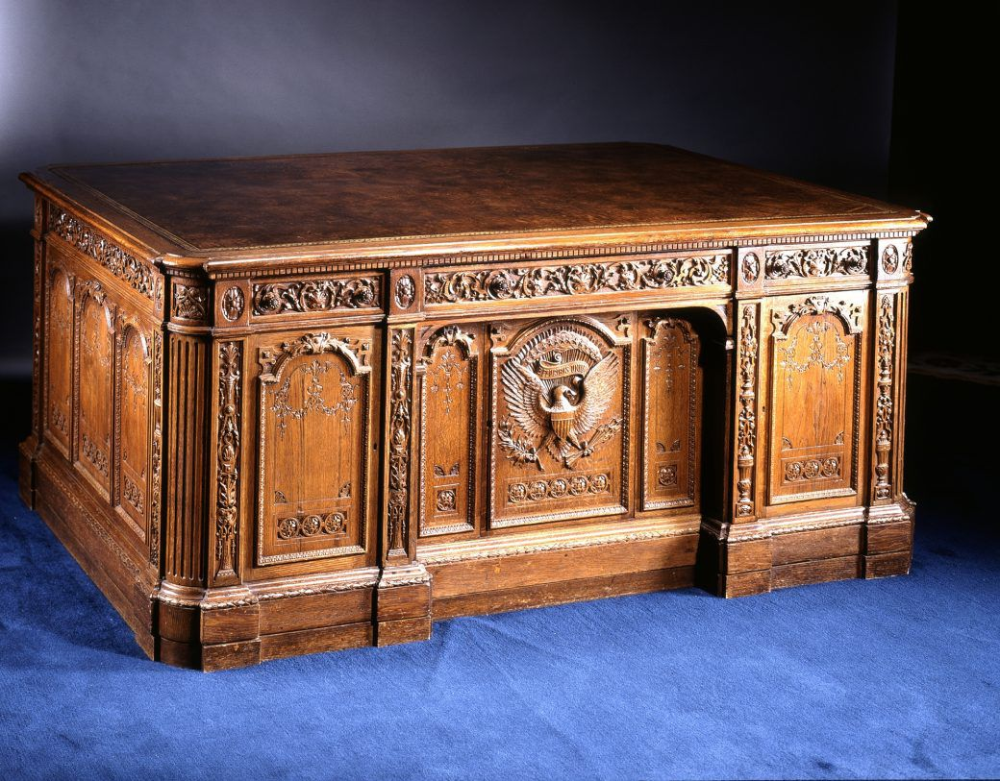
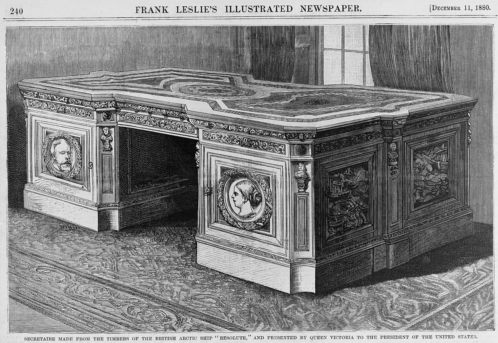
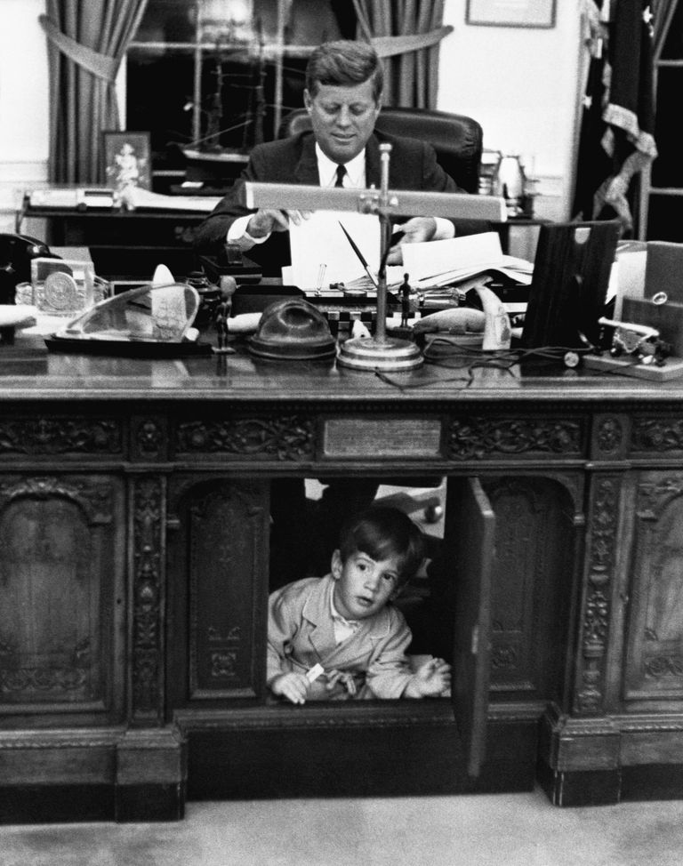
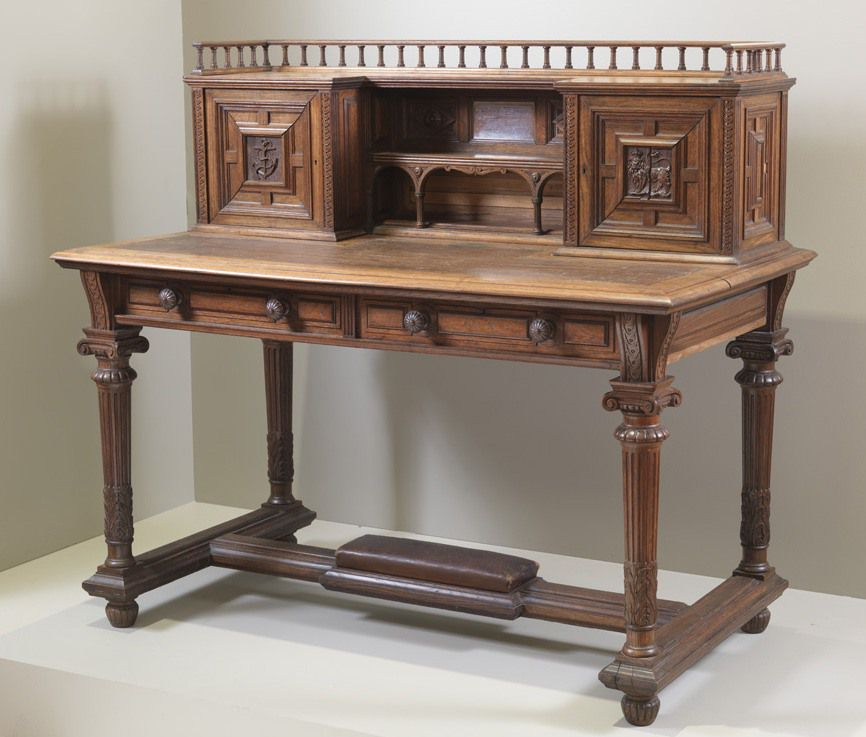
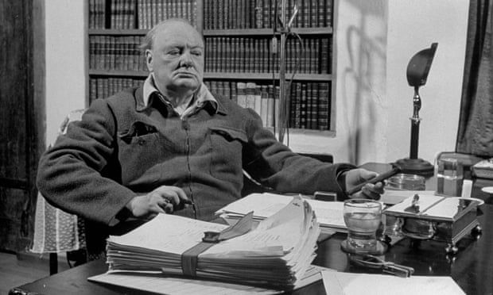
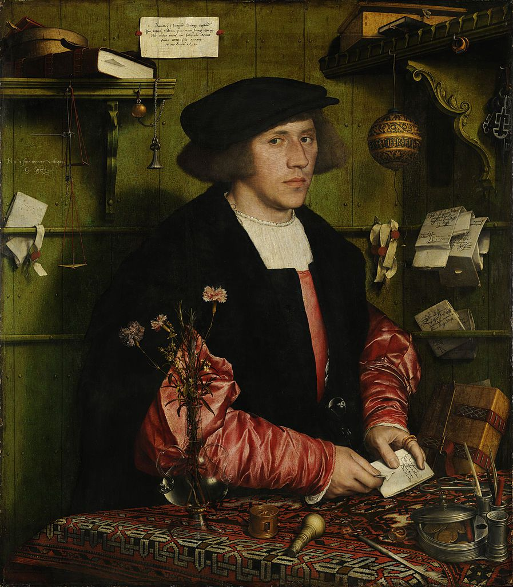

+++
title = "ABD Başkanlık Masası: Resolute Desk"
seotitle="ABD Başkanlık Masası: Resolute Desk"
description="The President's Desk veya The Resolute Desk olarak anılır. Tarihi, 1852'de İngiliz Savaş gemisi HMS Resolute ile başlar. ABD başkanlık masasının tarihi."
url="sayi-10/abd-baskanlik-masasi-resolute-desk"
aciklama="ABD başkanlarının ve ailelerinin Beyaz Saray'ı taşınma gününde yeniden dekore etmesi yaygın bir gelenektir. Bazıları milyon dolarlık tadilatlara başlarken, diğerleri yalnızca birkaç küçük değişiklik yapar. Ancak bireysel başkanlık tercihlerinden bağımsız olarak, asla değişmeyen bir şey vardır o da 'Resolute Desk'..."
type="sayfa"
thumb="/img/resolute-desk-thumbnail.jpg"
date = "2021-06-04"
sayi=["10"]
sayfa="02"
konuk= "Michael Nicholasian"
tags= ["ana sayfa", "dergi"]
+++

<div class="container">
   <p>
      ABD başkanlarının ve ailelerinin Beyaz Saray&#39;ı taşınma gününde yeniden
      dekore etmesi yaygın bir gelenektir. Bazıları milyon dolarlık tadilatlara
      başlarken, diğerleri yalnızca birkaç küçük değişiklik yapar. Ancak
      bireysel başkanlık tercihlerinden bağımsız olarak, asla değişmeyen bir şey
      vardır o da &quot;<strong>Resolute Desk</strong>&quot;. 1880&#39;den beri
      resmi fotoğraflar, iş dünyası ve diğer düşünceli bakışlar için tarihi bir
      sahne malzemesi olarak hizmet veriyor. Amerika&#39;nın en ünlü çalışma
      masası oldukça ilginç bir geçmişe sahiptir.
   </p>
   <div class="row">
      <div class="col-md-6 mt-md-5">
         {{}}
         <small>
            HMS Resolute ve HMS Intrepid winter quarters, Melville
            Adası&#39;nda, 1852-53. Resolute&#39;un yelken kaptanı George
            Frederick McDougall tarafından çizilmiştir.</small
         ><br><br>
      </div>
      <div class="col-md-6">
         <h2 id="the-resolute-desk-tarihi" class="mt-0">
            The Resolute Desk Tarihi
         </h2>
         <p>
            &quot;The President&#39;s Desk&quot; veya &quot;The Resolute
            Desk&quot; olarak anılır. Tarihi, 1852&#39;de
            <strong>İngiliz Savaş gemisi HMS Resolute</strong> ile başlar. Gemi,
            Kuzeybatı Geçidi&#39;ni keşfetmeye çalışırken Kuzey Kutbu&#39;nda
            kaybolan Sir John Franklin ve ekibini aramaya gönderilir. Ne yazık
            ki, Resolute kalın buz içinde terk edilmek zorunda kalınır ve ekibi
            başka bir gemiyle İngiltere&#39;ye döner.
         </p>
         <p>
            HMS Resolute, Eylül 1855&#39;te ABD&#39;li balina avcısı George
            Henry&#39;den Kaptan James Buddington tarafından Baffin Adası
            yakınlarındaki buz kütleleri içinde sürüklenirken keşfedildi.
            Çözülme başladığında, onu Konektikıt&#39;taki New London ana
            limanına götürdü. İngiliz Hükümeti onun üzerindeki tüm hak
            taleplerinden feragat ettikten sonra Amerikan Hükümeti onu talihli
            balina avcılarından 40.000 dolara satın aldı, sonrasında Kraliçe
            Victoria&#39;ya ve İngiliz halkına sunmak amacıyla, masrafları
            Brooklyn Navy Yard&#39;da Amerikan Hükümeti tarafından karşılanmak
            üzere onarıldı.
         </p>
      </div>
   </div>

   <div class="row">
      <div class="col-md-6">
         {{}}
         <small>Resolute Desk</small><br ><br >
      </div>
      <div class="col-md-6">
         <p>
            11 Haziran 1879&#39;da Deniz Kuvvetleri Komutanlığı tarafından,
            Kraliçe Victoria&#39;nın Amerika başkanına hediye etmek için
            Resolute gemisinin ahşabından yapılmış bir mobilya parçası
            tasarlamak için bir yarışma başlatılır.
         </p>
         <p>
            The Builder&#39;daki 3 Ocak 1880 tarihli bir makale, istenen
            mobilyanın detaylarını &quot;geminin kerestesinden Birleşik
            Devletler Başkanı&#39;na hediye olarak yazı masası ve kitap
            raflarını birleştiren muhteşem bir mobilya parçası olarak
            gönderileceği&quot; şeklinde betimler. Morant, Boyd &amp; Blanford
            ve Jackson &amp; Graham dahil olmak üzere altı firma, mobilyayı
            tamamlamak için rakip tasarımlar sunar sonuç olarak Morant, Boyd
            &amp; Blanford mobilyanın tamamlanması için seçilir. Kelly&#39;nin
            1871 Londra Postanesi Rehberi&#39;ne göre Morant, Boyd &amp;
            Blanford iç mimarlar, ressamlar, döşemeciler, site ve konut
            yöneticileri, oymacılar, yaldızcılar ve marangoz yapımcılarının
            çalıştığı biri 91 New Bond Street ve diğeri 4-7 Woodstock Caddesi
            olmak üzere iki farklı konutta bulunuyordu. Şirket, George Morant
            tarafından kuruldu ve Thomas Lawrence, Robert Peel ve Sussex Dükü,
            Cambridge ve Sutherland için iş sağlamıştı. Şirket ayrıca Büyük
            Sergi, Tüm Milletler Endüstrisi Sergisi ve 1862 Uluslararası
            Sergisinde yer aldı.
         </p>
      </div>
   </div>
   <div class="row">
      <div class="col-md-6">
         {{}}
      </div>
      <div class="col-md-6">
         <p>
            Morant, Boyd ve Blandford 1879 sonlarında yarışma için, büyük bir
            kitaplık ve baca parçası da dahil olmak üzere inşa edilebilecek
            çeşitli mobilya parçaları için birden fazla tasarım çizimi
            göndermişlerdi. Frank Leslie&#39;nin Resimli Gazetesinin 11 Aralık
            1880 tarihli baskısı, bu tasarımın bir gravürünü başkana sunulan
            masa olarak yanlış bir şekilde sundu. Hem Kraliçe Victoria hem de
            Başkan Hayes&#39;in portrelerini içeren bu erken süslü tasarım 9
            Eylül 1879&#39;da oluşturulmuştu.
         </p>
         <p>
            Nihai olarak Kraliçe Victoria biri şu anda Resolute masası olarak
            bilinen geminin kerestelerinden üç masanın yapılmasını emretti.
            Hazine Lordları Komisyon Üyelerinin emriyle doğramacı atölyesinde
            çalışan yetenekli bir marangoz olan William Evenden, Chatham
            Tersanesi&#39;ndeki masayı oluşturmakla görevlendirildi.
         </p>
      </div>
   </div>
   <div class="row">
      <div class="col-md-6">
         {{}}
         <small
            >Stanley Tretick'in 2 Ekim 1963 tarihli John F. Kennedy Jr.'ın
            Resolute masasında oynarken çekilmiş fotoğrafı</small
         >
      </div>
      <div class="col-md-6">
         <p>
            Resolute Desk, bir zamanlar HMS Resolute&#39;un parçası olan meşe
            kerestelerden yapılmıştır. 32,5 inç (83 cm) yüksekliğinde ve 72 inç
            (180 cm) genişliğinde ve 48 inç (120 cm) derinliğinde çalışma alanı
            vardır. 1.300 pound (590 kilogram) ağırlığa sahiptir. Çift kaideli
            masa William Evenden tarafından çiçek motifli tasarımlar ile
            oyulmuştur, kaidelerinin her iki yanında dolap kapaklarının
            arkasında çekmece takımları bulunmaktadır ve masaüstü kırmızı deri
            ile kaplıdır.
         </p>
         <p>
            Ön orta çekmeceye monte edilmiş masanın arkasındaki bir levha
            Resolute&#39;un tarihini ve anlamı açıklıyor. Bu plak orijinal
            olarak masanın arkasındaydı ancak bir noktada öne taşındı. Tüm dış
            çekmece cephelerinin alt tarafında &quot;MORANT BOYD &amp; BLANFORD /
            91 NEW BOND STREET&quot; ve kilit plakaları &quot;ROYAL / LETTERS
            PATENT / FOUR LEVERS / SAFETY LOCK / COMYN CHINC &amp; Co.&quot;
            yazıları damgalıdır.
         </p>
         <p>
            Franklin D. Roosevelt, masayı değiştiren ilk başkandı. Roosevelt
            çocuk felci teşhisi için giydiği bacak tellerini saklamak için çöp
            kutuları kullanmak yerine masanın diz boşluğuna menteşeli bir panel
            yerleştirdi. Roosevelt&#39;in gizli kapısı oyma bir başkanlık mührü
            ile işlendi. Bu, Truman&#39;ın kartalı bir barış işareti olarak
            zeytin dallarına çevirme kararından önceydi. Başkan Truman 1945'te
            göreve geldiğinde bu paneli resmi olarak taktırmıştı ve Resolute'un
             paneli zeytin dalları yerine, savaş oklarına bakan kartal
              Beyaz Saray mühürlerinden biri olmaya devam etmektedir.
         </p>
      </div>
   </div>

   <div class="row mb-1">
      <div class="col-md-6">
         {{}}
         <small>Grinnell Resolute Masası | New Bedford Whaling Museum</small>
      </div>
      <div class="col-md-6">
         <p>
            Kraliçe aslında geminin kerestesinden üç masa yapılmasını emretti.
            İkinci masa, Başkan&#39;ın masasına göre çok daha küçük ve mütevazı.
            1980&#39;lerden beri Kraliyet Donanması Müzesi&#39;ne ödünç verildi.
            &quot;Kraliçe Victoria Masası&quot; veya &quot;Grinnell Masası&quot;
            olarak bilinen üçüncüsü, bir kadın masasıdır ve birkaç Franklin
            kurtarma girişimini finanse eden yardımlarından dolayı
            Kraliçe&#39;den Henry Grinnell&#39;in dul eşine bir armağandı.
         </p>
      </div>
   </div>
   <div class="row mb-2">
      <div class="col-md-6">
         {{}}
         <small>
            Winston Churchill masasında. Fotoğraf: Nat Farbman/The LIFE Picture
            Collection/Getty Images</small
         >
      </div>
      <div class="col-md-6">
         <p>
            İngiliz kökenli meşe keresteleri bir zamanlar Kuzey Kutbunun buzlu
            sularına göğüs germiş Kraliyet Donanması yelkenli gemisi olan HMS
            Resolute&#39;tan gelen Viktorya dönemine ait oymalarının kalbinde
            ABD kartalını taşıyan devasa bir çalışma alanı sunan bu masa
            tasarımının rolü aslında nedir?
         </p>
         <p>
            Devasa masalar güce sinyal vermek için tasarlanmıştır. Bölmelerle
            donatılmış, çizelgeleri ve savaş planlarını açmak için alana sahip
            bir masa, uzaktaki iş yerlerini kontrol ettiğinizi veya savaşları
            planladığınızı ima edebilir. Winston Churchill sık sık, düzgün
            düzenlenmiş kağıtlarla geniş bir masada fotoğraflandı. Fotoğrafçılar
            onları masalarında yakaladıklarında Churchill&#39;in veya bir
            başkanın çok önemli bir işin ortasında olması elbette mümkün. Ancak
            çalışma masaları, Rönesans&#39;tan beri çabayı sembolize etmek için
            kullanılmıştır.
         </p>
      </div>
   </div>
   <div class="row">
      <div class="col-md-6">
         {{}}
         <small>Hans Holbein, Georg Giese&#39;nin Portresi, 1532</small>
      </div>
      <div class="col-md-6">
         <p>
            16. yüzyılın başlarında Hans Holbein tarafından canlandırılan bir
            Alman tüccar olan Georg Giese&#39;nin portresi, elinde mektupla,
            acil postalar, hesaplar, mühürler ve mürekkeple çevrili olarak
            duruyor. Mesaj açık, tüm bu portre seansları için bile zar zor
            zamanı var.
         </p>
      </div>
   </div>
   <div class="embed-responsive embed-responsive-16by9">
      <iframe
         class="embed-responsive-item"
         src="https://www.youtube.com/embed/RqJ4pJaEQFk"
      ></iframe>
   </div>
   <br ><br >
   <button
      class="btn markutbtn"
      data-target="#my-collapse"
      data-toggle="collapse"
      aria-expanded="false"
      aria-controls="my-collapse"
   >
      Kaynaklar
   </button>
   <div id="my-collapse" class="collapse">
      <pre> <small><code>  
      https://www.cheatsheet.com/money-career/secrets-oval-offices-resolute-desk-used-every-president-since-carter.html/

      https://www.theguardian.com/artanddesign/2020/nov/27/trumps-furniture-fail-desk-donald-table-tv-dinners
      
      https://www.washingtonpost.com/news/reliable-source/wp/2018/04/26/trump-told-the-french-president-that-the-resolute-desk-was-from-1814-try-again/
      
      http://www.thepresidentsdesk.com/history/
      
      https://en.wikipedia.org/wiki/Resolute_desk
      
      https://en.wikipedia.org/wiki/Victorian_decorative_arts
      
      http://www.whitehousemuseum.org/furnishings/resolute-desk.htm
      
      https://www.whitehousehistory.org/photos/treasures-of-the-white-house-resolute-desk
      
     </code></small></pre>
   </div>
</div>
